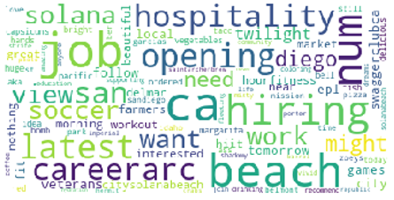

Participantes: Eduardo Magalhães, Leonardo Stayner
Curso: Natural Language proessing
Período: 9° Semestre
Contato com o usuário: Não
Formato: Biblioteca de Python
Duração: 3 semanas
Descrição: Um módulo python para analisar textos de acordo com suas características, ou tags. Este módulo consiste em uma caixa de ferramentas que facilita o gerenciamento de recursos de texto a fim de tornar a NLP tão acessível ao usuário quanto os módulos Scikit-Learn e Tensorflow se tornam para o Machine Learning